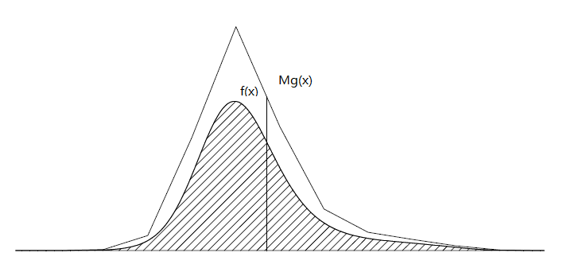

Introduction to Bayesian computation
The goals are to estimate
the posterior distribution \(p(\theta|y)\propto p(\theta)p(y|\theta)\)
the posterior predictive distribution \[p(\tilde y|y) = \int p(\tilde y|\theta)p(\theta|y)d \theta =E[p(\tilde y|\theta)|y]\]
We are therefore insterested in estimating the posterior expectation \[\mu=E[h(\theta)|y]=\int h(\theta)p(\theta|y)d \theta\]
- moments: \(h(\theta)=\theta^k\)
- probability: \(h(\theta)=1_A(\theta)\), \(A\subseteq \Theta\)
- predictive density: \(h(\theta)=p(\tilde y|\theta)\) for fixed \(\tilde y\)
Monte Carlo methods
Suppose we can simulate \(\theta^{(i)},\dots,\theta^{(N)}\sim p(\theta|y)\) independently. Monte Carlo (MC) esimate is then the sample average: \[\hat{\mu}_N = \frac1N\sum_{i=1}^N h(\theta^{(i)})\]
- LLN: \(\hat\mu_N\to \mu\) w.p.1 as \(N\to \infty\)
- CLT: \(\hat\mu_N-\mu=O_p(N^{-1/2})\)
Traditional quadrature rules’ have error rate \(O(N^{-r/d})\), where \(r\ge 1\) depends on the smoothness of the functions, and \(d\) is the dimension of \(\theta\). This suffers the curse of dimensionality.
MC has an error rate \(O(N^{-1/2})\) independently of the smoothness and the dimension of the functions. The task is to simulate iid samples \(\theta^{(i)}\sim p(\theta|y)\).
Random number generators
We start with a pseudo-random number generator: \[u_1,\dots,u_n,\dots\stackrel{iid}\sim U(0,1)\]
- Mersenne Twister by Matsumoto & Nishimura (1998), whose period is \(2^{19937}-1>10^{6000}\)
- RngStreams by L’Ecuyer, Simard, Chen, Kelton (2002)
They aren’t really uniform random, but good ones are close enough.
Non-uniform random variables
Some common distributions (such as Normal, exponential, binomial, Poisson etc.) are already in some scientific softwares (R, Python, Matlab, Julia, Mathematica, etc.)
We are now concerned with a general distribution. Principled approaches are
- inversion
- acceptance-rejection
Inversion
Let \(F(x)\) be the CDF of the distribution of interest. We can simulate the distribution via iid uniforms \(U_1,\dots,U_N\stackrel{iid}\sim U(0,1)\):
\[X_i=F^{-1}(U_i),i=1,\dots,N\]
\(F^{-1}\) is the inverse of the CDF \(F\), definited by \[F^{-1}(u)=\inf\{x\in\mathbb{R}|F(x)\ge u\}\]
it is easy to see that \(X_i\stackrel{iid}\sim F\)
Inversion: examples
Gaussian
\[Z=\Phi^{-1}(U)\sim N(0,1)\]
\[X=\mu+\sigma\Phi^{-1}(U) \sim N(\mu,\sigma^2)\]
Exponential
\[X= -\frac 1\lambda \log (1-U)\sim Exp(\lambda)\]
Bernoulli
\[X=1\{U\le p\}\sim Bin(1,p)\]
Multivariate inverse transformation
- let \(F(x_1,\dots,x_d)\) be the PDF of \(X_1,\dots,X_d\)
- let \(F_i(x_i)\) be the marginal distribution of \(X_i\)
- for \(i=2,\dots,d\), let \(F_i(x_i|x_1,\dots,x_{i-1})\) be the conditional CDF
The multivariate inverse transformation is proposed by Rosenblatt (1952), which simulates the components \(X_i\) recursively, i.e.,
\[X_1=F_1^{-1}(U_1)\] \[X_i=F_i^{-1}(U_i|X_1,\dots,X_{i-1}),\ i=2,\dots,d\]
- the output has the destribution \(F\)
- the order of simulating the components can be arbitrary
- the critical issue is to know the conditional CDFs in advance
Acceptance-rejection
- suppose the target distrubtion is \(f(x)\) with the support \(\mathcal{X}\)
- we can sample \(Y\sim g\), where \(g\) is another density satisfying: there exists \(M>0\) such that \[\frac{f(x)}{g(x)}\le M\ \forall x\in \mathcal{X}\]
- we can compute \(f(x)/g(x)\)
The algorithm goes below
Step 1: simulate \(Y\sim g\)
Step 2: accept \(Y\) as a draw from \(f\) with probability \(f(Y)/(Mg(Y))\). If the draw is rejected, return to Step 1.
Step 2’: simulate \(U\sim U(0,1)\) \[ \begin{cases} \text{accept } Y & U\le f(Y)/(Mg(Y))\\ \text{go to Step 1 }& else \end{cases} \]
Acceptance-rejection

- the acceptance probability: \[E[f(Y)/(Mg(Y))]=\frac 1 M\]
- we may choose the smallest \(M\) such that \(f(x)\le Mg(x)\) for all \(x\in\mathcal{X}\)
Acceptance-rejection for Bayesian computation
the target density \[p(\theta|y)=\frac{p(\theta)p(y|\theta)}{p(y)}\]
the constant \(p(y)\) is unknown
the AR algorithm works well if taking \(f(\theta)=p(\theta)p(y|\theta)\) and using proposal density \(\propto g(\theta)\) with \[\frac{p(\theta)p(y|\theta)}{g(\theta)}\le M\]
Example: Gamma distribution
\(Gamma(\alpha,\lambda)\), \(\alpha>0\) is the shape, \(\lambda>0\) is the rate
density
\[f(x) = \frac{\lambda^\alpha}{\Gamma(\alpha)}x^{\alpha-1}e^{-\lambda x}1\{x> 0\}\]
\[Gamma(\alpha,\lambda)\stackrel{d}{=}\frac 1 \lambda Gamma(\alpha,1)\]
\[Gamma(\alpha,1)\stackrel{d}{=}U(0,1)^{1/\alpha}Gamma(\alpha+1,1)\]
so our target is \(Gamma(\alpha,1)\) with \(\alpha>1\). For this case, the density is bounded.
the proposal \[g(x)=?\]
Gamma density

Ahrens and Dieter (1974) took proposals from a density that combines a Gaussian density in the center and an exponential density in the right tail.
Marsaglia and Tsang (2000) present an AR algorithm from a truncated \(N(0,1)\)
Example: Beta distribution
\(Beta(\alpha,\beta)\) density \[f(x)=\frac{\Gamma(\alpha,\beta)}{\Gamma(\alpha)\Gamma(\beta)}x^{\alpha-1}(1-x)^{\beta-1}1\{0<x<1\}\]
generate a Beta from two independent Gammas \[Beta(\alpha,\beta)\stackrel{d}{=}\frac{Gamma(\alpha,\lambda)}{Gamma(\alpha,\lambda)+Gamma(\beta,\lambda)}\]
for \(\alpha>1\) and \(\beta>1\), the beta density is unimodal and achieves its maximum at \(x^*=(\alpha-1)/(\alpha+\beta-2)\)
Beta density

- Proposal distribution: \(U(0,1)\)
- \(M=f(x^*)\)
- accept \(U\sim U(0,1)\) with probability \(f(U)/M\)
Beta generator: R code
myBeta <- function(n,alpha,beta){
if(alpha<=1 | beta<=1)
stop("alpha, beta cannot be <= 1")
M = dbeta((alpha-1)/(alpha+beta-2),alpha,beta)
x = rep(0,n)
for(i in 1:n){
while (TRUE){
U = runif(1)
if(dbeta(U,alpha,beta)>= M*runif(1)){
x[i] = U
break
}
}
}
return(x)
}Simulation results

| mean | sd | |
|---|---|---|
| myBeta | 0.4001780 | 0.1968478 |
| dbeta | 0.3996059 | 0.2000705 |
| true values | 0.4000000 | 0.2000000 |
Importance Sampling
- the target is to estimate \(\mu=E_f[h(X)]\) w.r.t. the density \(f(x)\)
the proposal density \(q(x)\): \(q(x)>0\) whenever \(h(x)f(x)>0\) \[\mu=\int h(x)f(x)dx=\int h(x)\frac{f(x)}{g(x)}g(x)dx=E_g[h(X)f(X)/g(X)]\]
\(f(x)/g(x)\) called the likelihood ratio (LR)
The IS algorithm goes below
- Step 1: simulate \(n\) samples \(X_1,\dots,X_n\) from \(g(x)\)
- Step 2: compute the sample average: \[\hat{\mu}_{IS}=\frac 1N\sum_{i=1}^N \frac{h(X_i)f(X_i)}{g(X_i)}\]
Choosing the proposal
\[Var[\hat{\mu}_{IS}] = \frac{\sigma^2_g}{N}\]
\[\sigma^2_g = \int \left(\frac{h(x)f(x)}{g(x)}-\mu\right)^2g(x)d x=\int\frac{(h(x)f(x)-\mu g(x))^2}{g(x)}dx\]
- if \(g(x)=h(x)f(x)/\mu\) and \(h\ge 0\), then we have the optimal case \(\sigma^2_g=0\)
- but unattainable: \(\mu\) is unknown constant
- we may find \(g(x)\approx h(x)f(x)/\mu\)
The weight function
- let \(w(x)=f(x)/g(x)\) be the LR \[\sigma^2_g =\int \frac{(hf)^2}{g}dx -\mu^2\]
\[\int \frac{(hf)^2}{g}dx=E_f[w(X)h(X)^2]=E_g[w(X)^2h(X)^2]\]
- if \(w(x)\) is bounded, then \(\sigma^2_g\) is bounded
- if \(w(x)\) is unbounded, then \(\sigma^2_g\) may be unbounded (the worst case!)
Self-normalized IS (SNIS)
What if we cannot compute \(f/g\)? Suppose that \[f(x)=c_f\tilde{f}(x),\ g(x)=c_g\tilde{g}(x)\]
and we can compute \(\tilde f,\tilde g\) but not the constants \(c_f,c_g\). Then we use
\[\hat{\mu}_{SNIS}= \frac{\frac 1 N\sum_{i=1}^nh(X_i)\tilde{f}(X_i)/\tilde{g}(X_i)}{\frac 1 N\sum_{i=1}^n\tilde{f}(X_i)/\tilde{g}(X_i)}\]
or, equivalently,
\[\hat{\mu}_{SNIS}= \frac{\frac 1 N\sum_{i=1}^Nh(X_i){f}(X_i)/{g}(X_i)}{\frac 1 N\sum_{i=1}^N{f}(X_i)/{g}(X_i)}=\frac{\frac 1 N\sum_{i=1}^Nh(X_i)w(X_i)}{\frac 1 N\sum_{i=1}^Nw(X_i)}\]
Variance of SNIS
- Taylor expansions \[f(\bar X,\bar Y)\approx f(\mu_1,\mu_2)+f_x(\mu_1,\mu_2)(\bar X-\mu_1)+f_y(\mu_1,\mu_2)(\bar Y-\mu_2)\]
\[E[f(\bar X,\bar Y)]\approx f(\mu_1,\mu_2)\]
\[Var[f(\bar X,\bar Y)]\approx f_x^2Var[\bar X]+f_y^2Var[\bar Y]+2f_xf_yCov(\bar X,\bar Y)\]
for \(f(x,y)=x/y\), \(f_x=1/y,f_y=-x/y^2\) \[Var[f(\bar X,\bar Y)]\approx \frac{\sigma_X^2}{N\mu_2^2}+\frac{\mu_1^2\sigma_Y^2}{N\mu_2^4}-\frac{2\mu_1}{N\mu_2^3}Cov(X,Y)\]
- \(Var[\hat{\mu}_{SNIS}]\approx \frac{1}{N}E_g[w(X)^2(h(X)-\mu)^2]\)
\(Var[\hat{\mu}_{IS}]= \frac{1}{N}E_g[(h(X)w(X)-\mu)^2]\)
Optimal SNIS
SNIS: \(g_{opt}(x)\propto f(x)|h(x)-\mu|\)
IS: \(g_{opt}(x)\propto f(x)|h(x)|\)
Effective sample size
Unequal weighting raises variance, see, Kong (1992), Evans and Swartz (1995)
for iid \(Y_i\) with variance \(\sigma^2\) and fixed \(w_i\ge 0\), \[Var\left(\frac{\sum_{i}w_iY_i}{\sum_iw_i}\right)=\frac{\sum_iw_i^2\sigma^2}{(\sum_iw_i)^2}=\frac{\sigma^2}{N_{eff}}\]
where the effective sample size \(N_{eff}\) is defined as
\[N_{eff} = \frac{(\sum_{i=1}^Nw_i)^2}{\sum_{i=1}^Nw_i^2}\in [1,N]\]
\(N_{eff}\) is small if there are few extremely high weights which would unduly influence the distribution
for equal weights, we have \(N_{eff}=N\)
Example 1
Suppose the posterior distribution is \(N(\mu,\sigma^2)\), the proposal distribution is \(t_3(\mu,\sigma^2)\). Consider \(\mu=\sigma=2\).

Example 1
## [1] "Effective sample size is 9178 / 10000"
| n=100 | n=1000 | n=10000 | exact_value | |
|---|---|---|---|---|
| Mean | 2.214328 | 2.011347 | 1.945335 | 2 |
| Variance | 3.069694 | 3.688183 | 4.052519 | 4 |
Example 2
Suppose the posterior distribution is \(t_3(\mu,\sigma^2)\), the proposal distribution is \(N(\mu,\sigma^2)\).
## [1] "Effective sample size is 6180 / 10000"
| n=100 | n=1000 | n=10000 | exact_value | |
|---|---|---|---|---|
| Mean | 1.802681 | 1.784954 | 2.019707 | 2 |
| Variance | 4.630305 | 6.931088 | 6.875331 | 12 |
IS vs acceptance rejection
Acceptance-rejection requires bounded LR \(f/g\)
We also have to know a bound
IS and SNIS require us to keep track of weights
Plain IS requires normalized \(f/g\)
Acceptance-rejection samples cost more (due to rejections)
IS for rare events
rare events: \[h(x)=1_A(x), \mu = E_f[h(x)]=\int_A f(x) dx=\epsilon\approx 0\]
coefficient of variation of \(\hat{\mu}\) \[cv:=\frac{\sigma/\sqrt{N}}{\mu}=\frac{\sqrt{\epsilon(1-\epsilon)}}{\sqrt{n}\epsilon}\approx \frac{1}{\sqrt{n\epsilon}}\]
to get \(cv=0.1\) takes \(N\ge 100/\epsilon\), e.g., \(\epsilon = 10^{-5}\), then \(N\ge 10^7\)
Taking \(X\sim f\) does not get enough data from the important region \(A\).
Get more data from \(A\) (from a proper proposal \(g(x)\)), and then correct the bias (the LR function)
Changing a parameter
norminal distribution \(p(x;\theta_0)\), \(\theta_0\in\Theta\)
proposal distribution \(p(x;\theta)\), \(\theta\in\Theta\)
estimator \[\hat\mu_\theta=\frac{1}{N}\sum_{i=1}^N h(X_i) \frac{p(X_i;\theta_0)}{p(X_i;\theta)}\]
The importance ratio often simplifies, e.g., in exponential families.
Exponential tilting
Many important distributions can be written in the form \[p(x;\theta) = a(\theta)\exp[\eta(\theta)^\top T(x)]b(x), \theta\in \Theta\]
\[\hat\mu_\theta=\frac{a(\theta_0)}{a(\theta)}\frac{1}{N}\sum_{i=1}^N h(X_i) \exp[(\eta(\theta_0)-\eta(\theta))^\top T(X_i)]\]
\(\eta(\theta)\) is the natrual parameter
This is called the ‘exponential twisting’.
The goal is to choose \(\theta\in\Theta\) such that \(Var[\hat\mu_\theta]\) is minimized.
A simple example
norminal distribution \(p(x;\theta_0)=N(x;0,1)\)
proposal distribution \(p(x;\theta)=N(x;\theta,1)\), \(\theta\in\mathbb{R}\)
target function \(h(x) = 1\{x>c\}\), for large \(c>0\), \(\mu=E[h(X)]=1-\Phi(c)\approx 0\)
IS estimator \[\hat\mu_\theta=\frac{1}{N}\sum_{i=1}^N h(X_i) \frac{N(X_i;0,1)}{N(X_i;\theta,1)}=\frac{1}{N}\sum_{i=1}^N h(X_i) e^{-\frac{2\theta X_i-\theta^2}{2}}\]
IS variance \(Var[\hat\mu_\theta]=\sigma^2_\theta/N\) \[\sigma^2_\theta=\frac{e^{\theta^2}}{\sqrt{2\pi}}\int_c^\infty e^{-\frac{(x+\theta)^2}{2}}dx-\mu^2=\frac{e^{\theta^2}[1-\Phi(c+\theta)]}{\sqrt{2\pi}}-\mu^2\]
the optimal parameter \(\theta^*=\arg \min_{\theta\in \mathbb{R}} e^{\theta^2}[1-\Phi(c+\theta)]\)
The effect of different parameters

## [1] "the threshold c = 3"## [1] "the true value is 0.0013498980316301"## [1] "the optimal theta is 3.155"## [1] "variance reduction factor is 404"Applications in Computational Finance
P. Glasserman, P. Heidelberger, and P. Shahabuddin. Asymptotically optimal importance sampling and stratification for pricing path-dependent options. Mathematical Finance, 9 (2):117–152, 1999.
P. Glasserman, P. Heidelberger, and P. Shahabuddin. Variance reduction techniques for estimating value-at-risk. Management Science, 46(10):1349–1364, 2000.
P. Glasserman, J. Li. Importance Sampling for Portfolio Credit Risk. Management Science, 51(11):1643–1656, 2005.
Xie, Fei, Zhijian He, and Xiaoqun Wang. An Importance Sampling-Based Smoothing Approach for Quasi-Monte Carlo Simulation of Discrete Barrier Options. European Journal of Operational Research, October 17, 2018. https://doi.org/10.1016/j.ejor.2018.10.030
Importance Sampling for Portfolio Credit Risk
Our interest centers on the distribution of losses from default over a fixed horizon.
\(m\): number of obligors
\(Y_k\): default indicator for \(k\)th obligor, \(Y_k=1\) denotes the default; \(Y_k=0\) otherwise
\(p_k\): marginal probability that \(k\)th obligor defaults
\(c_k\): loss resulting from default of \(k\)th obligor
\(L=c_1Y_1+\dots+c_mY_m\): total loss from defaults
Our goal is to estimate tail probabilities \(P(L>x)\), especially at large values of \(x\)
Normal copula model
In the normal copula model, dependence is introduced through a multivariate normal vector \(X_1,\dots,X_m\) of latent variables. Each default indicator is represented as \[Y_k = 1\{X_k> x_k\},\ k=1,\dots,m.\] \[X_k = a_{k1}Z_1+\dots+a_{kd}Z_d+b_k\epsilon_k\]
\(x_k\) are chosen to match \(P(X_k>x_k)=p_k\)
\(Z_1,\dots,Z_d\stackrel{iid}{\sim} N(0,1)\) are systematic risk factors
\(\epsilon_k\stackrel{iid}{\sim} N(0,1)\) is an idiosyncratic risk
\(a_{k1},\dots,a_{kd}\) are the loading factors satisfying \(\sum_{j=1}^d a_{kj}^2\le 1\)
\(b_k=\sqrt{1-\sum_{j=1}^d a_{kj}^2}\) so that \(X_k\sim N(0,1)\)
IS for independent obligors
Consider the simple case of independent obligors: \(a_{ij}=0,\ b_k=1\), i.e., \(Y_k\sim Bin(1,p_k)\) independently. The idea is to replace each default probability \(p_k\) by some other default probability \(q_k\), the basic IS identity is \[P(L>x)= \tilde{E}\left[1\{L>x\}\prod_{k=1}^m\frac{p_k^{Y_k}(1-p_k)^{1-Y_k}}{q_k^{Y_k}(1-q_k)^{1-Y_k}}\right]\]
Exponential Twisting: Glasserman and Li (2005) chooses \[q_{k,\theta} = \frac{p_ke^{\theta c_k}}{1+p_k(e^{\theta c_k}-1)}\]
The original probabilities correspond to \(\theta=0\)
if \(\theta>0\), this does indeed increase the default probabilities; a larger exposure \(c_k\) results in a greater increase in the default probability.
Choosing the optimal parameter
The LR is reduced to \[\prod_{k=1}^m\frac{p_k^{Y_k}(1-p_k)^{1-Y_k}}{q_k^{Y_k}(1-q_k)^{1-Y_k}}=\exp(-\theta L+\psi(\theta))\]
where \[\psi(\theta)=\log E[e^{\theta L}]=\sum_{k=1}^m \log(1+p_k(e^{\theta c_k}-1))\] is the cumulant generating function (CGF) of L.
The optimal parameter is \[\theta^* = \arg \min_{\theta\ge 0} \{M_2(\theta)=E_\theta[1\{L>x\}e^{-2\theta L+2\psi(\theta)}]\}\]
Choosing the sub-optimal parameter
Observe that for \(\theta\ge 0\), \[M_2(\theta)\le e^{-2\theta x+2\psi(\theta)}\]
Minimizing \(M_2(\theta)\) is difficult, but minimizing the upper bound is easy: \[\theta_x = \arg \min_{\theta\ge 0}e^{-2\theta x+2\psi(\theta)}=\arg \max_{\theta\ge 0} \{\theta x-\psi(\theta)\}\]
The function \(\psi(\theta)\) is strictly convex and passes through the origin, so the maximum is attained at \[\theta_x = \begin{cases} \text{unique solution to }\psi'(\theta)=x,\ &x>\psi'(0)\\ 0,\ &x\le \psi'(0). \end{cases} \]
for the first case, \(E_{\theta_x}[L]=\psi'(\theta_x)=x\), thus, we have shifted the distribution of L so that x is now its mean.
for the second case, the event \(\{L>x\}\) is not rare, so we do not change the probabilities.
Dependent Obligors: Conditional Importance Sampling
For general factor models, \(Y_k\) are dependent; but they are independent conditinal on the systematic risk factors \(Z_1,\dots,Z_d\). So we can apply the so-called conditional IS.
Step 1: simulate \(Z_1,\dots,Z_d\sim N(0,1)\) and compute the default probability \(p_k=p_k(Z_1,\dots,Z_d)\)
Step 2: for simulated \(p_k\), obtain the twisting parameter \(\theta_x=\theta_x(Z_1,\dots,Z_d)\)
Step 3: compute the LR for the \(\theta_x\)
Step 4: repeat Steps 1–4 \(N\) times and then obtain the final IS estimate
Numerical results
The numerical results were reported in Glasserman and Li (2005).
- \(21\)-factor model with \(m=1000\) obligors
- \(p_k = 0.01(1+\sin(16\pi k/m))\)
- \(c_k=(\lceil5k/m\rceil)^2\)
- VRF = “Variance Reduction Factor”
| \(x\) | \(P(L>x)\) | VRF |
|---|---|---|
| 10,000 | 0.0114 | 33 |
| 14,000 | 0.0065 | 53 |
| 18,000 | 0.0037 | 83 |
| 22,000 | 0.0021 | 125 |
| 30,000 | 0.0006 | 278 |
| 40,000 | 0.0001 | 977 |
Extensions
The defual indicators
\[Y_k=1\{X_k>x_k\}\]
- \(X_k\) follow t copula model
Joshua C.C. Chan, Dirk P. Kroese. Efficient estimation of large portfolio loss probabilities in t-copula models. European Journal of Operational Research, 205:361–367, 2010.
- \(X_k\) follow another advanced models, e.g., self-exciting model, Giesecke et al. (2010)
Random default exposures: \(c_k=e_k\ell_k\), where \(\ell_k\in[0,1]\) denotes a random percentage loss, and \(e_k>0\) are constants. \[L = \sum_{k=1}^m e_k\ell_k1\{X_k>x_k\}\]
- \(\ell_k\) are iid truncated normals or betas
Cross-entropy
The optimal proposal density is obtained by locating the member \(p(x;\theta),\theta\in\Theta\) that minimizes its cross-entropy distance to the zero-variance proposal density \(q^*(x)\propto h(x)p(x;\theta_0)\).
The minimization of the cross-entropy is equivalent to solving the following maximization problem \[\max_{\theta\in\Theta} \int h(x)p(x;\theta_0)\log p(x;\theta)d x=\max_{\theta\in\Theta} E_{\theta_0}[h(X)\log p(X;\theta)]\]
Since most often an analytical solution to the above maximization problem is not available, we consider instead its stochastic counterpart \[\theta^*=\arg \max_{\theta\in\Theta}\frac 1{N_0}\sum_{i=1}^{N_0}h(X_i)\log p(X_i;\theta),\ X_i\stackrel{iid}{\sim} p(x;\theta_0)\]
More detials see Rubinstein (1997), Rubinstein & Kroese (2004).